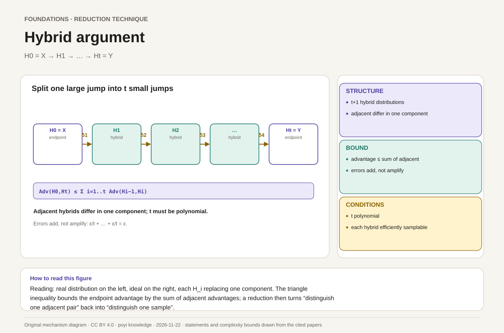
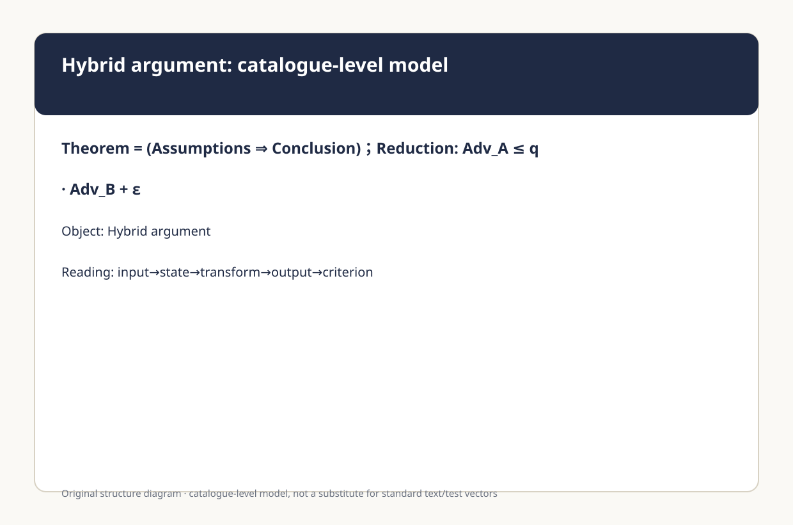

Principles
Theorem: Hybrid Argument (混合论证). ### A chain, not a single step
To show that two distributions X and Y are computationally indistinguishable, the hybrid argument does not compare them directly. It constructs t+1 distributions H0=X, H1, …, Ht=Y so that each adjacent pair differs in one component. If every adjacent pair is indistinguishable under the same kind of assumption, the endpoints are indistinguishable too. ### The triangle inequality gives the bound
For any distinguisher D, define its advantage Adv(H0,Ht;D) = |Pr[D(H0)=1] − Pr[D(Ht)=1]|. Insert H1…Ht−1; the intermediate terms cancel: Adv(H0,Ht;D) ≤ Σ_{i=1}^{t} Adv(Hi−1,Hi;D). This is not probability amplification but error addition: if each of t adjacent advantages is ε/t, the total is ε. ### Standard use: replace one component at a time
For multi-message IND-CPA, define H_i as “the first i ciphertexts are real, the rest are random”. Single-message IND-CPA makes every adjacent pair indistinguishable; t=q(n) is polynomial, so q ciphertexts remain indistinguishable.

Why it matters
The hybrid argument turns “the whole system is indistinguishable” into “replace one component at a time”. Multi-bit PRG stretch, KEM/DEM hybrid encryption, ideal/real games and compositional security all use this chain to split a large jump into small ones.
It buys: if the adjacent assumptions hold, the endpoints hold. It does not buy: any conclusion beyond those adjacent assumptions. If a component is broken, the chain does not repair it. It also gives no concrete bit-security, only an asymptotic or lossy bound.
Applications
- Multi-message IND-CPA: in H_i the first i ciphertexts are real and the rest random; q queries reduce to one query. - PRG iteration: in H_i the first i outputs come from the PRG and the rest from true randomness; each extra bit crosses one adjacent hybrid. - KEM/DEM: first replace the session key by a random key (KEM security), then replace the DEM ciphertext by a random string (DEM security); add the two advantages. - Code-level game hopping: each code change defines a hybrid; reduce each adjacent gap in turn.
Reading: count the hybrids t, then check that t is polynomial, every hybrid is efficiently samplable, and every adjacent gap is reducible.
A shared name may belong to an algorithm, standard, event, person or term; this entry is responsible only for its catalogue binding and does not absorb adjacent records. If versions, regions or institutions define the name differently, the differences stay side by side.

Limits & attacks
- The number of hybrids is not polynomial. If t=2^n, splitting ε into 2^n shares makes each share negligible, and the reduction yields no contradiction. 2. Some hybrid cannot be sampled efficiently. A probability ensemble is useful in a reduction only when a polynomial-time algorithm can sample it. 3. The adjacent gap does not follow from an assumption. The hybrid argument itself creates no computational assumption. 4. Adaptive state. If component i can read the secret state of component i+1, “replace one component” may fail; a stronger hybrid or simulation is needed.
A standard hybrid proof usually loses a factor t. A scheme with q queries gets a “q times advantage” bound; a 128-bit security claim cannot look only at the single-query advantage. Tight reductions need direct arguments, public coins or other techniques; the hybrid argument does not provide them automatically.
History
Goldwasser and Micali introduced computational indistinguishability as a security definition in “Probabilistic Encryption” (1984) and used a hybrid argument to show that multiple samples do not increase distinguishing advantage. Goldreich later wrote it as a standard lemma in Foundations of Cryptography.
It is a basic proof tool, not a technique owned by one algorithm. The name comes from “hybrid distributions”: insert middle distributions between real and ideal, and move through them layer by layer.
Worked example & verification
Formal model and reproduction steps
[\Pr[\mathrm{Bad}_A(\lambda)]\le \varepsilon(\lambda)]
Hybrid Argument: the registered public parameters, key material or randomness, and message are mapped through the stated transformation to an output checked against the registered criterion. The worked example is a structural reproduction, not a new test vector; parameter ranges, standard versions and implementation details remain source-bound.
References
- Wikipedia search entry for 混合论证. https://zh.wikipedia.org/w/index.php?search=%E6%B7%B7%E5%90%88%E8%AE%BA%E8%AF%81
- Handbook of Applied Cryptography (Menezes, van Oorschot, Vanstone). https://www.cacr.math.uwaterloo.ca/hac/